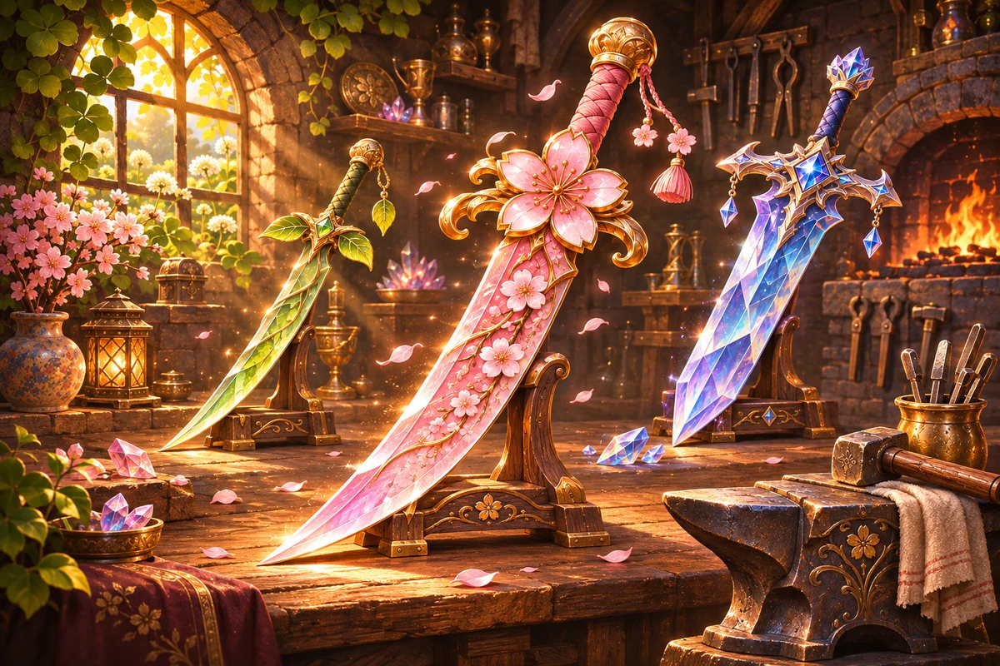
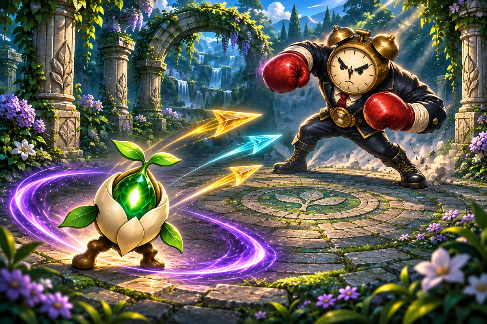

와르르 고개 너머 포싸움
바람을 읽고 각도와 힘을 맞춰 언덕 너머 상대에게 포탄을 넘기세요. 땅은 폭발로 파이고, 받침을 잃은 바위는 와르르 무너져 굴러갑니다. 화포장군·신궁·도깨비·무당·거북선 장수·구미호 가운데 한 명을 골라 백두산부터 저승의 강까지 겨룹니다.
한 판 붙기PC 키보드·마우스 · 모바일 터치 · 가로 화면 권장
AI 대전(쉬움·보통·어려움) / 한 기기로 둘이서
JP MATH LAB / GAMES
작은 선택이 다른 움직임을 만듭니다.
게임 안에서 부딪히고, 조합하고, 다시 도전해 보세요.
바람을 읽고 각도와 힘을 맞춰 언덕 너머 상대에게 포탄을 넘기세요. 땅은 폭발로 파이고, 받침을 잃은 바위는 와르르 무너져 굴러갑니다. 화포장군·신궁·도깨비·무당·거북선 장수·구미호 가운데 한 명을 골라 백두산부터 저승의 강까지 겨룹니다.
한 판 붙기PC 키보드·마우스 · 모바일 터치 · 가로 화면 권장
AI 대전(쉬움·보통·어려움) / 한 기기로 둘이서

조준하고, 왕복하는 게이지를 멈춰 타격하세요. 4구·3쿠션·8볼에서 AI와 겨루거나 한 기기로 함께 플레이하고, 연습과 샷 재생으로 감각을 익힙니다.
당구 클럽 입장PC·모바일 터치 · 왕복 파워 게이지
4구·3쿠션·8볼 · AI 4단계 · 2인 대전 · 자유 연습
무녀 린, 철귀, 무진, 궁수 하늬, 처녀귀신 아랑 가운데 한 명을 골라 산사 계곡부터 대숲·서라벌·저승길·천뢰궁까지 여덟 마당을 누비세요. 탄막 사이를 요리조리 빠져나가고, 바짝 붙어 근접 공격, 필살기로 탄막을 금화로 바꾸며 도깨비 장군부터 뇌공까지 여덟 수호신을 쓰러뜨립니다.
천뢰 출격PC 키보드 · 모바일 터치 · 가로 화면 권장
수련 / 아케이드 · 닉네임으로 캐릭터별 최고 점수 등록

가속·코너링·부스터가 다른 10대 중 나만의 차를 고르세요. 1.45km 도심·1.09km 해상 코스의 좁은 지름길과 제철소의 18m 낙하에 도전하세요. 일곱 코스에서 드리프트·부스터로 라이벌과 겨룹니다.
레이스 시작PC·태블릿 키보드 · 모바일 터치 · 3랩

끝없이 검을 벼려 최고 강화에 도전하세요. 성공, 초기화, 파괴의 갈림길에서 검의 새 모습을 발견하고 다시 불꽃을 피웁니다.
몽글 대장간 시작자동 제련 · PC와 모바일 · 브라우저 자동 저장

01 / 씨앗의 여정
씨앗 하나로 시작해 법칙을 조합하세요. 진화를 완성하고 궁극기를 깨운 뒤, 점점 까다로워지는 문지기와 끝없는 여정에 도전합니다.
SEED 시작PC와 모바일 · 가로 화면 권장
같은 기기·브라우저에서 저장된 방 입구부터 이어하기
02 / 세계를 도는 선택
주사위를 굴려 세계 도시를 사 모으세요. 환율과 뉴스에 따라 달라지는 재산, 복리로 불어나는 예금까지. 마지막에 가장 많은 재산을 가진 사람이 승리합니다.
보드게임 시작한 기기를 돌려가며 · NPC와 혼자서도 가능
경제수학 수업에서 만든 게임을 여기서 바로 플레이
03 / 벤치에서 시작하는 전설
고교 1학년 벤치 선수로 시작하세요. 투수와 타자, 나만의 훈련과 진로를 선택하며 프로 무대와 명예의 전당에 도전합니다.
나의 야구 인생 시작PC와 모바일 · 세로 화면에 맞춘 카드형 게임
광고·가입 없이 브라우저 자동 저장 · 비공식 팬 게임
왼쪽 스틱으로 이동하고, 오른쪽 ◇ 버튼으로 회피하세요. 공격은 자동입니다. 궁극기와 카드, 출구는 화면에서 누르세요.
WASD 이동 · Space 회피 · F 궁극기 · E 출구 · P 또는 Esc 일시정지. 가까운 적을 향해 자동으로 공격합니다.
인원과 라운드를 정한 뒤 원정을 시작하세요. 내 차례에 환전하거나 주사위를 굴리고, 도시에 도착하면 구매 여부를 고릅니다. 혼자라면 NPC를 추가해 서로 다른 전략을 겨뤄 보세요.
선수를 만든 뒤 시즌을 보내고, 결과를 확인하며 겨울의 선택을 골라보세요. 다음 시즌도, 은퇴할 때도 당신이 정합니다. 기기나 브라우저를 바꿀 때는 설정에서 저장 파일을 내보내고 가져오세요.